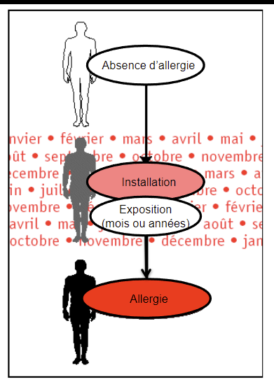
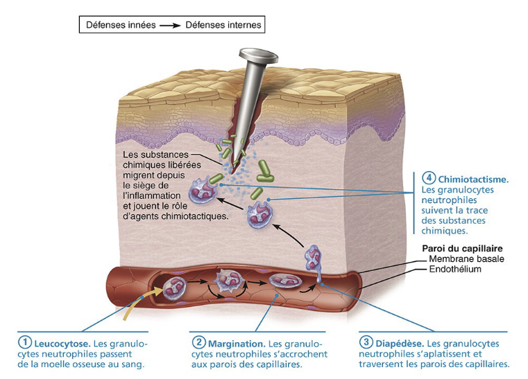
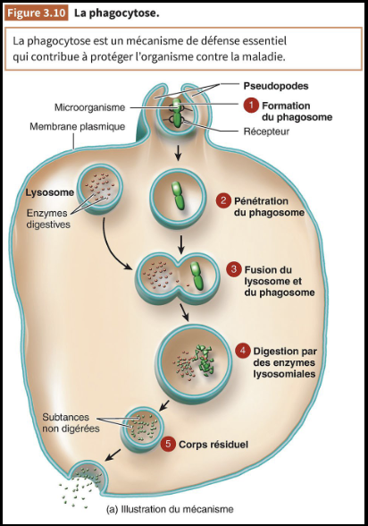
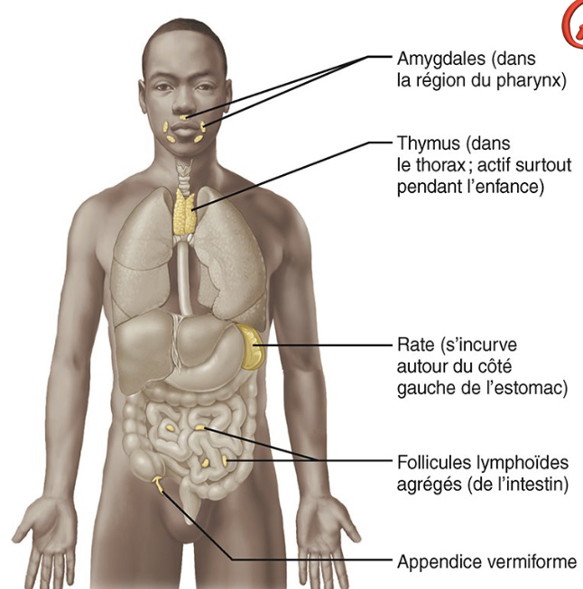
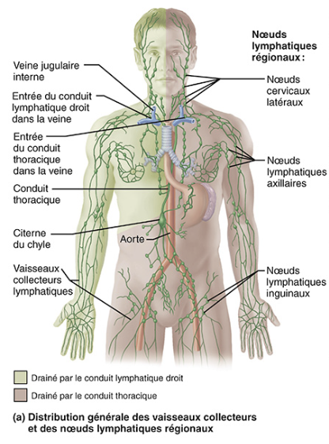
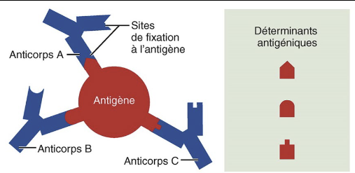
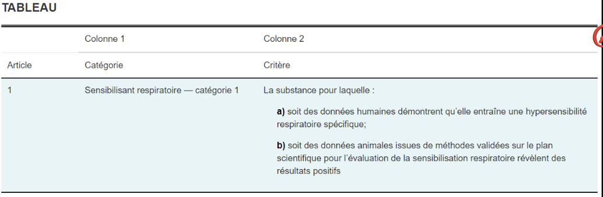
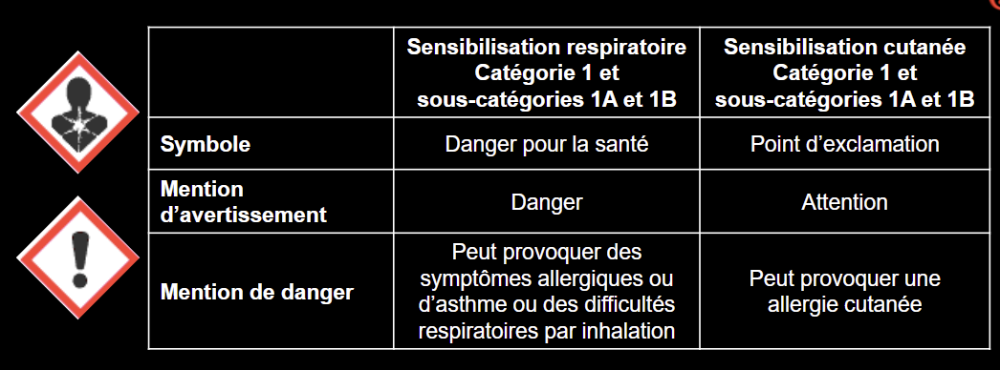
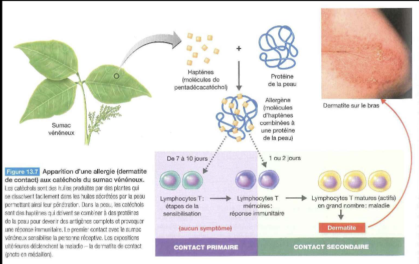
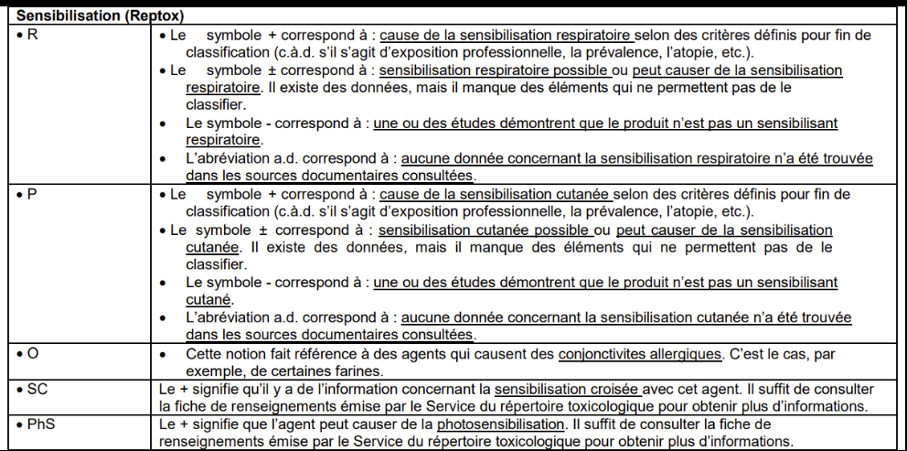

Sensibilisants respiratoires et cutanés
Un sensibilisant induit une réponse immunologique inadaptée (allergie) après une phase de latence asymptomatique. Contrairement à la toxicité dose-dépendante, la sensibilisation peut être déclenchée à de très faibles concentrations chez les individus déjà sensibilisés. En mine, le ciment (Cr VI), les biocides de forage, les fumées de soudage et les résines époxy sont des sources documentées.
Table des matières
- Mécanisme immunologique
- Caractéristiques des allergies professionnelles
- Sensibilisants respiratoires
- Sensibilisants cutanés
- Agents emblématiques
- Application terrain
- Ressources
Mécanisme immunologique
Le système immunitaire comprend deux volets complémentaires.

Toucher l'image pour l'agrandir- Immunité innée (non spécifique) : phagocytose (macrophages, neutrophiles), barrières.
- Immunité acquise (spécifique) : lymphocytes T et B, anticorps (Ig), mémoire.

Toucher l'image pour l'agrandir
Toucher l'image pour l'agrandirLe système lymphatique transporte les cellules immunitaires et achemine les antigènes vers les ganglions où la réponse spécifique se construit.

Toucher l'image pour l'agrandir
Toucher l'image pour l'agrandir Toucher l'image pour l'agrandir
Toucher l'image pour l'agrandirSensibilisation = induction d'une réponse immunitaire spécifique à un allergène. Le premier contact est asymptomatique (phase de sensibilisation). Les contacts ultérieurs déclenchent la réaction allergique, parfois à très faible dose.

Toucher l'image pour l'agrandirTypes d'hypersensibilité
- Immédiate (IgE) : urticaire, asthme allergique, anaphylaxie. Minutes après contact.
- Retardée (lymphocytes T) : dermatite de contact allergique. 24-72 h après contact.
Caractéristiques des allergies professionnelles
- Période de latence sans symptôme (sensibilisation).
- Atteinte d'une partie seulement des travailleurs exposés (contrairement aux effets toxiques classiques).
- Symptômes rythmés par l'activité : amélioration en vacances ou hors travail.
- Possibilité de symptômes à très faibles niveaux d'exposition.
Communication SGH (catégorie 1, 1A, 1B)
- Sensibilisant respiratoire : pictogramme « Danger pour la santé » + mention H334.
- Sensibilisant cutané : pictogramme « Point d'exclamation » + mention H317.

Toucher l'image pour l'agrandirSensibilisants respiratoires
Manifestations cliniques
| Pathologie | Caractéristiques |
|---|---|
| Rhinite allergique | Prurit nasal, éternuements, rhinorrhée, obstruction. Premier filtre, première manifestation. Peut précéder l'asthme. |
| Asthme allergique (professionnel) | Toux sèche, sifflements, oppression, essoufflement. Période de latence asymptomatique. Médié par IgE le plus souvent. |
| Asthme induit par irritants | Pas de latence. Hyperréactivité bronchique non spécifique après exposition unique massive ou répétée à des irritants. |
| Pneumopathie d'hypersensibilité | Alvéolite allergique extrinsèque. Inhalation chronique de moisissures, bactéries (actinomycètes), isocyanates, anhydrides. Par exemple poumon du fermier. |
Asthme professionnel = asthme causé par le travail (vs « asthme aggravé par le travail »).
Sensibilisants cutanés
| Manifestation | Mécanisme | Délai |
|---|---|---|
| Dermatite de contact allergique (eczéma) | Hypersensibilité retardée (T) | 24-72 h |
| Urticaire de contact allergique | Hypersensibilité immédiate (IgE) | Minutes |
| Dermatite de contact aux protéines | Eczéma chronique avec composante immédiate | Variable |

Toucher l'image pour l'agrandirLésions : papulovésicules prurigineuses, localisées surtout aux mains, poignets, avant-bras. Évolution vers eczéma chronique possible.

Toucher l'image pour l'agrandirFacteurs aggravants pour Métaux toxiques en milieu de travail (nickel) : travail en milieu humide, occlusion par gants, chaleur, pH acide, friction, pression.
Agents emblématiques
| Agent | Type | Secteur | Mécanisme |
|---|---|---|---|
| Isocyanates (MDI, TDI, HDI) | Sensibilisant respiratoire fort, parfois cutané | Polyuréthanes, peintures auto, mousses | IgE/IgG spécifiques. Asthme retardé possible 3-6 h post-exposition |
| Nickel | Sensibilisant cutané | Métallurgie, bijoux, électronique | Ions Ni2+ via sueur, hypersensibilité retardée |
| Chrome (VI) | Cutané | Ciment, soudage inox, tannerie | |
| Cobalt | Cutané + respiratoire | Métaux toxiques en milieu de travail durs (carbure de tungstène) | Bérylliose-like possible |
| Glutaraldéhyde | Respiratoire + cutané | Biocide forage, désinfection hospitalière | Asthme professionnel, eczéma |
| Latex (caoutchouc naturel) | Respiratoire + cutané | Soins de santé | IgE aux protéines. 8-12 % des travailleurs santé sensibilisés (OSHA) |
| Anhydrides d'acide | Respiratoire | Résines, plastiques | IgE, parfois cutané |
| Persulfates d'ammonium | Respiratoire + cutané | Coiffure | Urticaire, asthme |
| Farines, enzymes | Respiratoire | Boulangerie, agroalimentaire | Asthme du boulanger |
| Moisissures (foin) | Pneumopathie d'hypersensibilité | Agriculture | Poumon du fermier |
| Résines époxy (BADGE) | Cutané + respiratoire | Réparation, revêtements, mines | Sensibilisation fréquente chez mécaniciens et électrotechniciens |
Application terrain
Les sensibilisants sont souvent sous-estimés en mine parce que leur risque n'est pas dose-dépendant linéaire. Une fois la sensibilisation acquise, un travailleur peut devoir être réaffecté hors zone d'exposition.
| Source en mine | Sensibilisant principal | Métier concerné |
|---|---|---|
| Ciment, béton projeté (shotcrete) | Chrome VI hexavalent | Mineur, projeteur, boutefeu (post-tir) |
| Solvants dégraissants, peintures époxy | Résines, isocyanates | Mécanicien, peintre |
| Biocides de circuits hydrauliques | Glutaraldéhyde, isothiazolinones | Foreur, profil RPS et leadership de chantier diamant, atelier hydraulique |
| Fumées de soudage inox | Cr (VI), Ni | Soudeur |
| Lubrifiants, fluides de coupe | Émulsions, biocides | Usinage |
| Bioaérosols (dortoirs camp, bâtiments humides) | Moisissures | Personnel résidant en camp |
| Particules de carbure de tungstène | Cobalt (métaux durs) | Atelier d'outils de forage |
Démarche recommandée : registre des sensibilisants, surveillance médicale des travailleurs à risque (symptômes respiratoires, eczéma), substitution prioritaire pour les sensibilisants respiratoires majeurs (isocyanates → systèmes à base d'eau quand possible).
Ressources
| Document | Type | Source |
|---|---|---|
| Liste des sensibilisants notations RSST | Référentiel | LégisQuébec |
| Patch tests (TRUE test, batteries européennes) | Outil diagnostique | Dermatologie |
| Fiches IRSST sur l'asthme professionnel | Fiches | IRSST |
| Registre sensibilisants du site | Registre interne | À maintenir |
Articles wiki connexes
- SIMDUT et classes de danger
- Toxicité du système respiratoire
- Métaux toxiques en milieu de travail
- Bioaérosols
- SIMDUT et classes de danger
[[Wiki SST/00 - Accueil/�
Pages qui pointent ici (24)
- 🎯 Démarrage rapide, conseiller SST Toxicologie
- 🏠 Wiki Toxicologie, mines Toxicologie
- Aérosols Hygiène industrielle
- art-188.1-RSST Toxicologie
- art-188.4-RSST Toxicologie
- Bioaérosols Hygiène industrielle
- Métaux toxiques en milieu de travail Hygiène industrielle
- Métaux toxiques en milieu de travail Toxicologie
- Multiexposition aux contaminants Hygiène industrielle
- Multiexposition aux contaminants Toxicologie
- Outils de priorisation des risques chimiques Hygiène industrielle
- Outils de priorisation des risques chimiques Toxicologie
- Pesticides Toxicologie
- Priorisation et substitution chimique Toxicologie
- Qualité de l'air intérieur Hygiène industrielle
- SIMDUT et classes de danger Hygiène industrielle
- SIMDUT et classes de danger Toxicologie
- Solvants organiques Hygiène industrielle
- Solvants organiques Toxicologie
- Toxicité du système respiratoire Toxicologie
- Toxicité par organe Toxicologie
- Toxicocinétique Toxicologie
- Toxicologie clinique Toxicologie
- VEA et normes RSST Hygiène industrielle